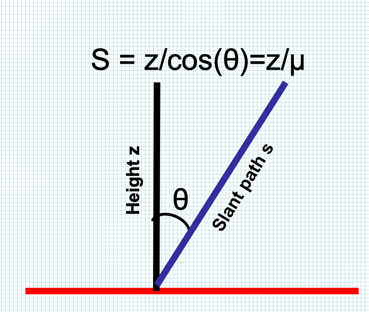
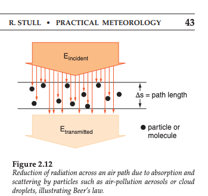

6.5. Flux and radiance review¶
Question: “I’m confused about the difference between emission/radiance/flux. The incoming flux = irradiance = E. Radiance = L = independent of distance = luminosity. What’s the outgoing flux then? Is the emission the outgoing flux? In Q4 of Beer’s Law in MT Questions Part 1, it asks us to calculate emission (among other things). Are we calculating the outgoing flux (aka irradiance)? Or the outgoing radiance?
The pertinent review question is Sample mid-term questions I Q4:
“Find the narrow beam transmission, absorption and emission for a series of stacked layers of equal transmissivities and temperatures in a direction perpendicular to the layers”
By restricting the situation to the “narrow beam approximation” reviewed below we get to use the fact that \(E = L \Delta \omega\), so that the relationship between flux and radiance in as simple as possible. After the midterm we’ll talk about how to handle the more general situation where photons are coming from all directions. This requires a new idea called the “diffuse transmissivity” that we haven’t had yet (and that’s a bit of a detour from remote sensing, where the “narrow beam approximation” almost always works.
6.5.1. Definitions¶
First some definitions – see Wikipedia for the (really complicated) full story.
Spectral (monochromatic) radiative flux density (or monochromatic irradiance). Symbol \(E_\lambda\): the energy of photons of a given wavelength crossing a plane surface from all directions. We need to know this when we try to figure out whether a horizontal layer of the atmosphere is being heated or cooled by radiation. The direction of the flux is defined as being perpendicular to the plane that it is crossing. Monochromatic (single wavelength) Units: \(W\,m^{-2}\,\mu m^{-1}\)
Spectral (monochromatic) radiance (also sometimes called intensity). Symbol \(L_\lambda\): the energy of photons of wavelength \(\lambda\) traveling within a solid angle (cone) field of view and crossing a surface. This is much more common than flux in remote sensing measurements, because every instrument has some limited field of view. The radiance direction is defined by the direction of the “spine” of the cone field of view. Monochromatic units: \(W\,m^{-2}\,\mu m^{-1}\,sr^{-1}\)
Slant path. Symbol s. The distance traveled along the cone field of view. From the figure below: \(z = s/\cos \theta\). Units: m.
Solid angle. Symbol \(\omega\). Definition from the Solid angle and radiance notes.
(6.4)¶\[d\omega = \frac{dA}{r^2} =\frac{ width \times height}{r^2} = \sin \theta \times d\phi \times d\theta = \sin \theta d\theta d \phi\]
{kind=link}
6.5.2. Relationship between flux and radiance¶
6.5.2.1. Exact equation – always correct¶
To get the flux \(E\) from the radiance \(L\) in any situation, it always works to integrate (2.6) from the Finding the flux given the radiance notes:
where we’ve used the change of variable \(\mu = \cos \theta\) with \(d\mu = -\sin \theta d\theta\) as discussed in class so we can forget about trig integrals.
We’ve covered two important approximations that make this integration trivial – narrow beam radiation and isotropic radiation. They are summarized below.
6.5.2.2. Narrow beam approximation – flux at a satellite¶
For remote sensing, we can use a simple approximation to do this integral, because the satellite telescope restricts the solid angle we’re sampling to a very thin cone pointed straight away from the sensor. The fact that the telescope is perpendicular to the camera means that the zenith angle within the cone, \(\theta \approx 0\) almost exactly, so when we integrate over the cone we can take \(cos\,\theta = \mu = 1\). It also means that \(L\) is very nearly constant within the cone, so we can move it out of the integral and get:
6.5.2.3. Narrow beam approximation – flux from the sun¶
The other case where we can use the narrow beam approximation is for direct sunlight, because at Earth’s orbit the sun subtends a solid angle of only about \(1 \times 10^{-4}\) sr. That means we have the same situation as with the telescope, and we can write (6.6) as:
Again, this works because 100% of the the flux falls into the narrow field of view \(\Delta \omega\), so that \(L\) is zero at all other solid angles outside of \(\Delta \omega\)
Some numbers: Specifically, we know that the sun has a radius of about \(7 \times 10^ 8\ m\), and is about \(150 \times 10^9\ m\) away from the earth. This means that, to an excellent approximation,
We also know that the sun has a surface temperature of 5780 K and is radiating like a blackbody, so:
Put those together and we get:
This is the situation Stull is illustrating in Figure 2.2 – sunlight at noon:
{kind=link}
6.5.2.4. Narrow beam approximation – sun at zenith angle \(\theta_{0}\)¶
If it isn’t noon, the sun isn’t directly overhead and the solar zenith angle \(\theta_0 \ne 0\), so we’ve got the situation discussed in the Finding the flux given the radiance notes (2.5):
Note that the zenith angle of the sun \(\theta_0\) is different from the cone \(\theta\) that is being integrated over in (6.6) – that \(\theta\) is the angle within the cone of \(\Delta \omega\). It is defined as \(\theta=0\) along the spine of the cone, and it varies to either side by only a few hundredths of a degree if the cone is narrow. The figure below shows the difference between the solar zenith angle \(\theta_0\) and the cone integration variable \(\theta\) for mid-afternoon sun.

6.5.2.5. Isotropic approximation – L the same at all angles¶
The other important case is when \(L\) is the same at all angles – this is called isotropic (i.e. direction independent) diffuse radiation. In that case \(L\) can come out (6.5) but \(\theta\) has to stay in:
which is true for a thermal emitter with a infinite horizontal extent (so that we can integrate all the way down to the horizon).
6.5.2.6. L varying over a range of angles¶
The atmosphere introduces an absorbing emitting layers that changes the value of L with changing zenith angle. How do we solve to solve (6.5) when \(L\) an’t come out of the integral? There is a simple approximation for that situation as well, discussed in The Schwartzchild equation for flux